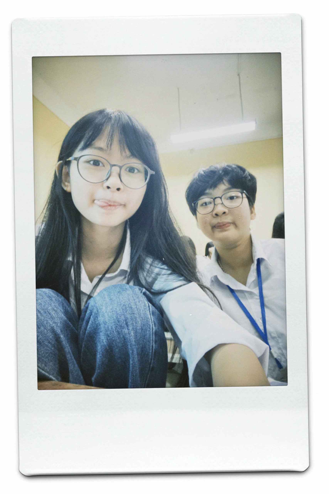
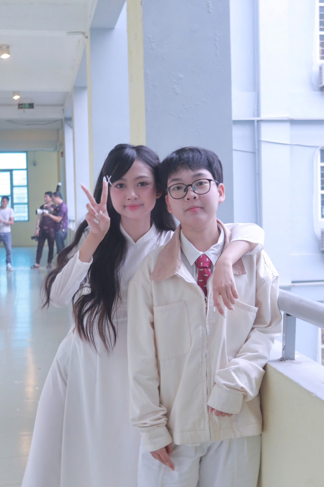
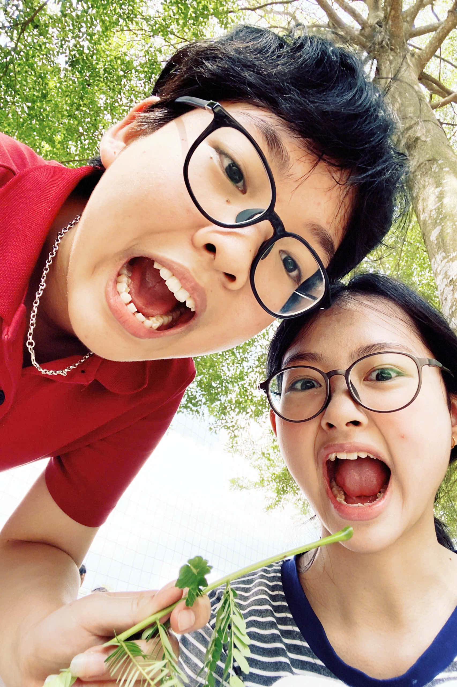

Đừng xúc động quá đấyyyy nhé !!
Hà Nội đợt này bắt đầu lạnh dần rồi, cô gái nhớ ăn uống cho đầy đủ, mặc quần áo ấm áp vào chứ gió Hà Nội mạnh lắm, chẳng may lại bị cuốn bay đi đâu thì dở đấy. Thực ra chẳng cần trời trở rét thì tôi mới nhớ bạn mà thi thoảng nhìn lên trời, nhìn vào một góc lớp ở HNUE đều cảm thấy nhớ Thư và 3 đứa kia lắm.
Chúng mình đã làm bạn từ đầu lớp 10 rồi nhỉ? Lúc đấy Thư ngồi ngay sau Ngân và cũng chỉ là chơi xã giao. Mãi đến ngày 08/07/2024, chúng mình mới trở thành bạn cùng bàn của nhau, Ngân vẫn nhớ những ngày đầu ấy muốn chuyển chỗ thế nào vì chưa tìm được cảm giác thân quen. Nhưng đúng là sự tình cờ có sắp đặt ấy lại đưa Ngân có cơ hội làm quen và thân thiết với một cô gái đáng yêu như Thư. Việc chúng mình trở nên thân thiết, việc chúng mình có một nhóm 5 người chơi với nhau tất cả đều nằm ngoài dự tính, suy nghĩ của Ngân và cả bây giờ nữa, Ngân sẽ không bao giờ nghĩ mình hoài niệm và nhớ thương deskmate của mình thế nào cho đến khi Ngân phải đến một môi trường mới. Hơn 700 ngày làm bạn cùng bàn của nhau, chúng mình đã có rất nhiều kí ức không thể quên chẳng hạn như được học tiếng Trung cùng Thư dù chẳng hiểu gì cả, xem phim, xem tiktok, quay mấy daily video nhảm nhí. Nhớ những ngày Ngân còn tránh né camera của các bạn, vậy mà sau khoá rèn luyện 2 năm, giờ tôi đã unlock được kĩ năng quay chụp daily, biết nói nhảm trước camera giống Thư nhưng chỉ tiếc là bây giờ mỗi ngày trôi qua đều không có Thư.
Từ trước đến nay, suốt 12 năm đi học và có lẽ trong cả 4 năm đại học sắp tới, Thư luôn là người bạn cùng bàn lâu dài nhất trong đời Ngân. Vì đã quen với việc cùng Thư đi học qua hai lần của bốn mùa xuân, hạ, thu, đông nên bây giờ lúc nào đi học cũng thấy đôi chút trống vắng. Không còn người để hỏi “Sao sáng nay đi học muộn thế?”, không còn được nghịch ngợm trong giờ học, không còn ai quay timelapse nữa… Nếu như được quay lại, chắc chắn Ngân sẽ tự tin quay chụp luyên thuyên với Thư và mấy đứa nhiều hơn nhưng thời gian đã trôi qua chẳng thể quay lại nên việc Ngân làm chỉ có thể là để cho mối quan hệ tốt đẹp của chúng mình có cơ hội tiếp diễn. Và dù là không thể xuất hiện thường xuyên trong bốn mùa xuân, hạ, thu, đông của nhau nữa nhưng mong rằng nhiều lần của bốn mùa ấy, Ngân vẫn sẽ được nhìn thấy Thư bình an và hạnh phúc thông qua những dòng tin, trạng thái trên mạng xã hội và những cuộc gặp gỡ không thường xuyên.
Cảm ơn Anh Thư vì đã là một phần rất đỗi tuyệt vời trong cuộc đời Trang Ngân! Chuyên Thái Bình là “nhà” và Thư là người “nhà” của Ngân.
Sắp tới cũng đến sinh nhật Thư, tiện những dòng thư nên chúc Thư sắp tới tuổi 18 thật mạnh khoẻ (có sức khỏe là có tất cả nhé cô gái, nhớ giữ gìn sức khỏe), mau ăn chóng lớn (lên Hà Nội là tọp đi mấy cân rồi, ăn nhiều vào), đạt nhiều thành tích tốt, GPA đúng như mong muốn, điểm rèn luyện tối đa… Mong cô gái sẽ luôn thật hạnh phúc với những điều mình đã chọn, sẽ luôn tìm thấy được yên bình sau những cơn giông “deadline” của HANU.
❤️ Trang Ngân